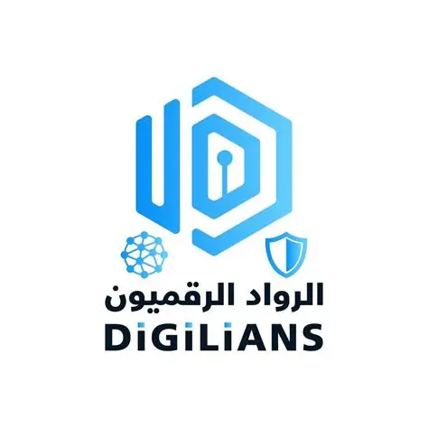
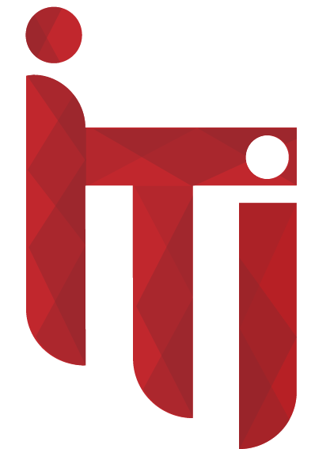

About Me
Education
Experience
Projects
Skills
Certificates
Activities
Contact
About Me
Education
Experience
Projects
Skills
Certificates
Activities
Contact
ISTQB Certified QA Engineer with hands-on experience in manual and automated testing across web, mobile, and API layers. Skilled in designing test cases, executing regression and exploratory testing, and building automation frameworks using Selenium, TestNG, and Cucumber (BDD). Strong foundation in SDLC/STLC, defect lifecycle management, and Agile collaboration.
University: Benha University
Faculty: Faculty of Computers and Artificial Intelligence
Major: Computer Science
Graduation Year: 2024
From Basics to Certification – Information Technology Institute (ITI) MaharaTech Platform.
Comprehensive software testing training at Route IT Training Center (Feb 2025 – Sep 2025).
Software Testing summer program at Information Technology Institute (ITI) (Sep 2024 – Oct 2024).
Summer Training at Information Technology Institute (ITI) (Aug 2023 – Sep 2023).

Fixed Solutions – Software Tester InternSep 2026 – Present
• Executed manual and automated test cases for web and mobile applications across functional, regression, and usability testing.
• Logged and tracked defects using bug tracking tools, ensuring clear and accurate documentation.
• Designed test scenarios and validated results in collaboration with developers and QA team members.
• Participated in Agile ceremonies, including stand-ups, sprint planning, and QA reviews.
Jul 2026 – Present
• Designed and executed test cases for functional, negative, boundary, and authorization scenarios.
• Delivered full QA documentation, including Test Plan, RTM, Bug Reports, and Regression Suite.
Jan 2026 – Jun 2026
• Completed 252 training hours (126 sessions) at Digilians Intensive Diploma under the Ministry of Communications and Information Technology.
• Designed and executed manual test cases including functional, regression, and bug reporting activities.
• Tested APIs using Postman and REST Assured.
• Developed automation scripts using Selenium WebDriver, TestNG, and Cucumber.
• Performed database validation using SQL and executed performance testing scenarios using JMeter.
Sep 2024 – Dec 2025
• Provided IT support and resolved software, hardware, and network-related issues.
• Maintained system performance and data accuracy while assisting end users with technical troubleshooting.
• Architected and deployed QPilot AI, an AI-powered QA
automation system that transforms requirement documents into
structured QA deliverables (user stories, acceptance criteria, test
scenarios, test cases).
• Designed a multi-agent workflow leveraging
OpenRouter LLMs and Qdrant vector DB, generating
9+ QA artifacts in one pipeline.
• Utilized n8n for workflow orchestration and
PostgreSQL for artifact versioning.
Tools: Python, FastAPI, OpenRouter, PostgreSQL, Qdrant, n8n.
• Developed a scalable UI automation framework using
Page Object Model (POM), reusable utilities, and explicit
waits.
• Implemented automated test execution, reporting, and
data-driven testing practices to improve test
maintainability.
Tools: Java, Selenium WebDriver, TestNG, POM.
• Implemented Behavior-Driven Development (BDD) automation
using Cucumber and Gherkin feature files.
• Created reusable step definitions and automated end-to-end user
scenarios for improved collaboration between QA and stakeholders.
Tools: Java, Selenium, Cucumber, Gherkin.
• Automated functional test scenarios for Android mobile
applications using Appium.
• Validated mobile UI interactions, navigation flows, and user
actions across different app screens.
Tools: Java, Appium, Android Studio.
• Designed and executed 10+ functional REST API test cases
using Postman.
• Validated response status codes, response data, and audio features
using Postman pre-scripts and automated tests.
Tools: Postman, REST API.
• Designed and executed 356+ manual test cases covering core
e-commerce modules.
• Reported 23 defects across critical user flows with proper
severity and priority classification.
Tools: Manual Testing, JIRA, Bug Reporting.
ISTQB® Certified Tester – Mobile Application Testing (CT-MAT)
Credential ID: 260614064
View CertificateMinistry of Communications and Information Technology (MCIT)
Feb 2026 – Jun 2026 · 252 hours
Route IT Training Center
Feb 2025 – Sep 2025

Information Technology Institute (ITI)
Sep 2024 – Oct 2024
Information Technology Institute (ITI)
Aug 2023 – Sep 2023
Feel free to reach out to me through any of the links below:
Email : mohamedsobhyayesh@gmail.com
LinkedIn : Mohamed Sobhy
Phone Number : +20 1227 221 819
Location : Nasr City, Cairo, Egypt